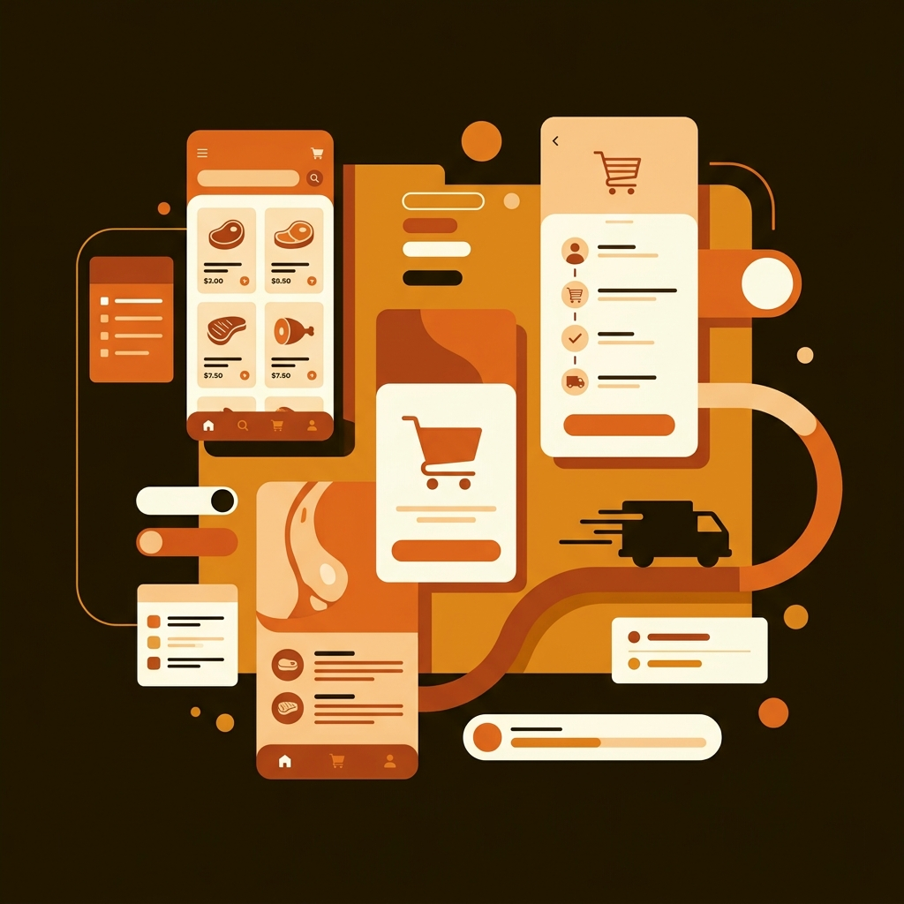

D2C Commerce
Experience
Designing a trust-focused ordering experience for an offline-first retail brand.

This project focused on designing a D2C mobile ordering experience for a retail brand transitioning from physical stores to digital commerce.
The primary goal was to preserve the trust, familiarity, and confidence of the offline shopping experience while creating a simple and modern mobile ordering flow.
The project focused heavily on:
- brand identity,
- checkout UX,
- delivery scheduling,
- and cart experience optimization.
The target users were already familiar with the brand through physical stores.
The challenge was making the digital experience feel:
- familiar,
- trustworthy,
- and operationally clear
instead of feeling like a generic e-commerce app.
Users needed confidence in:
- product selection,
- delivery timing,
- address management,
- pricing transparency,
- and final payment calculations.
- Improved checkout confidence
- Better alignment between offline and digital experience
- Faster product selection
- Improved payment clarity
- Stronger brand perception
- Better delivery coordination visibility
This project reinforced how strongly trust influences commerce experiences.
For offline-first users, familiarity and clarity matter just as much as functionality.
Small interaction details during checkout can significantly affect confidence, conversion behavior, and overall product perception.
Wanna know more?
Happy to discuss the checkout experience, brand-focused UX approach, product decisions, or collaboration opportunities.
Email Me